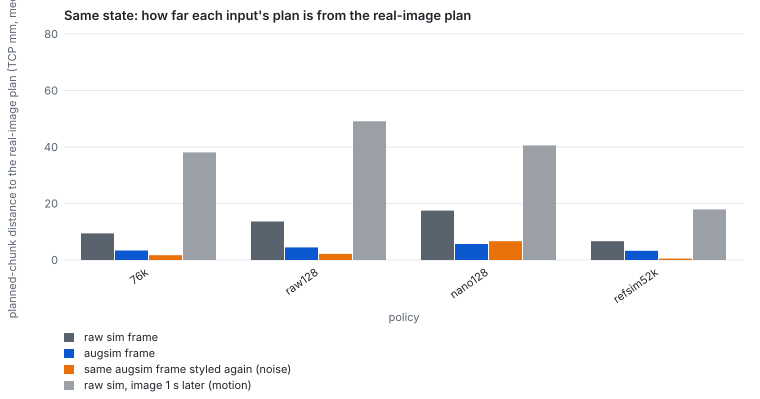
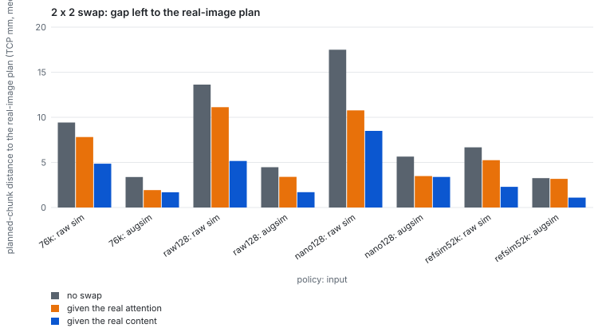
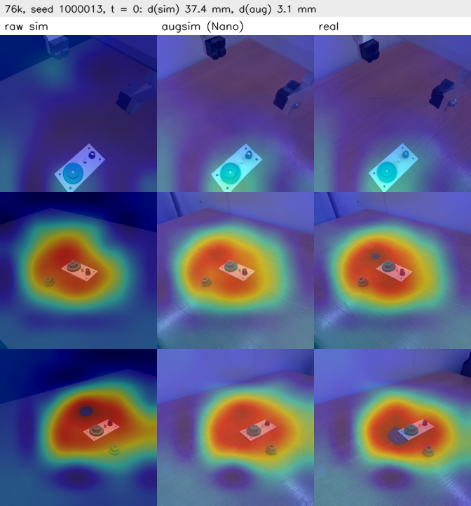
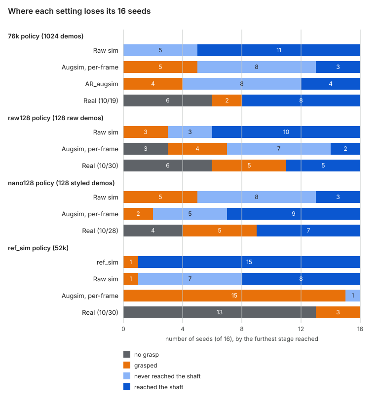

Can a video world model close the sim-to-real gap? Lessons from a contact-rich insertion task
· Jiayu Zhou
Abstract
- Idea. Use a video world model (Cosmos3-Nano) as a learned renderer that repaints simulator frames to look like the real cameras ("augsim"), then use it to train and to evaluate robot policies.
- Setting. Tight-tolerance gear insertion with a Franka FR3, three cameras, ACT policies trained on scripted demonstrations, and the same 16 seeded scenes in raw sim, augsim and the real world.
- Finding 1, realism. Fine-tuned on 10 minutes of real video, Nano halves the per-frame distance to the real cameras (KID, FD-DINOv2) and cuts FVD 2–3× against raw sim, at 0.06 s per frame. It is still far from indistinguishable.
- Finding 2, evaluation. Across four policies, augsim ranks policies in the real-world order while raw sim does not, and agrees better with the real outcome per seed when pooled (κ 0.37 vs 0.07 over 48 episodes). Absolute success rates are still off in both directions.
- Finding 3, training. Training on Nano-styled demonstrations beats training on the same raw demonstrations in the real world (7/16 vs 5/16 with 128 demonstrations). Matching the sim's appearance by hand does the opposite (0/16).
- Finding 4, the remaining gap. Most real failures happen before contact: empty grasps from 5–15 mm aim errors and a ~3 mm arm-settling offset. Appearance explains part of the gap, dynamics and calibration the rest.
- Finding 5, why augsim helps. On the same states, styled frames bring the policy's plan within 3–6 mm of its real-image plan (raw sim 7–18 mm). The policy looks at the same places either way; what changes is what it reads there, mainly the table, background and gripper (E12).
At a glance
| # | Question | Short answer |
|---|---|---|
| E1 | Does Nano make the sim look real? | Closer, not equal: about half the distance of raw sim, 20× the real-vs-real floor |
| E2 | Does augsim predict the real outcome? | Per seed better than raw sim; totals off in both directions |
| E3 | Do the real robot's actions succeed in sim? | Grasp and lift yes (8/8), seat rarely (2/8): dynamics differ by ~3.5 mm |
| E4 | Where does augsim's failure start? | At the first decision: styled frames move the first plan by 13–19 mm |
| E5 | Where inside the policy? | In the image encoder, driven by the styled table and background |
| E6 | Is autoregressive styling better than per-frame? | Yes for consistency: 3.5–6× less flicker, lower FVD |
| E7 | Does autoregressive styling fix augsim? | No: the decisive first frame is styled the same way |
| E8 | Does training on styled demonstrations help in the real world? | Yes, modestly: 7/16 vs 5/16 |
| E9 | Can a hand-matched sim replace the world model? | No: 15/16 in its own sim, 0/16 in the real world |
| E10 | Does augsim rank new policies correctly? | Yes, all three; raw sim gets the order wrong |
| E11 | Where does the styler break? | Not with camera shifts; it ignores prompts after fine-tuning |
| E12 | Why does augsim agree with the real world better? Where the policy looks, or what it sees there? | What it sees: attention barely moves; styled table, background and gripper features carry 48–66% of the plan gap |
1. Introduction
- Problem. Policies trained in simulation see images that look nothing like the real cameras. Domain randomization and hand-built photorealistic scenes are costly and still leave a gap.
- Opportunity. Video world models now generate realistic video conditioned on structure (edges, depth). Render the simulator however is convenient, then let the world model repaint every frame.
- Two uses. Training: style the demonstrations so the policy learns from realistic images. Evaluation: run a policy in the styled sim and use its success rate to predict real performance without the robot. Evaluation is the stricter test and the main focus here.
- Why a hard task. Gear insertion with sub-millimetre clearance exposes every error source at once, so the experiments can separate what appearance can and cannot fix.
- Contributions.
- Evidence on a world-model renderer as an evaluator, with per-seed agreement against the real world over four policies (E2, E10).
- A controlled test of training on styled data at small scale, against raw-sim training and a hand-matched sim (E8, E9).
- Mechanistic probes of where styled and raw sims diverge, down to the policy's layers and image regions (E3–E7).
- A stage-by-stage account of where a real-to-sim-to-real pipeline loses accuracy (section 5).
2. Related work
- RoboRender (Huang, Ai, …, Li Fei-Fei, Jiajun Wu; arXiv 2610.09254, 2026-10-07) asks whether a video model can make simulated data good enough to train real policies at scale, and answers yes for visually driven tasks.
- This project asks different questions: how little real data is enough, whether a styled sim can evaluate a policy, and what remains when the task is contact-rich.
| RoboRender | This project | |
|---|---|---|
| Base model | Wan2.1-T2V-1.3B | Cosmos3-Nano 8B |
| Real training data | ~127k samples (AgiBot-World-Alpha + DROID), 39,692 scenes | 20 episodes (~10 minutes), one real-world setup |
| Conditioning | Sim depth, robot RGB and mask, a structured scene prompt, the preceding frame | Edge + depth, fixed caption, autoregressive |
| Multiview | Views stacked into one latent | Each camera styled independently |
| Prompt following | Kept; the prompt sets textures, background and distractors | Lost after fine-tuning with a fixed prompt (E11) |
| How the renderer is used | Train π0.5 on rendered sim; evaluate in the real world | Evaluate policies in the styled sim; train on styled data at 128 demonstrations (E8) |
| Tasks | Pick-and-place, drawer, fridge, mobile pick | Tight-tolerance gear insertion |
| Real results | 71% vs 10% raw sim and 20% domain randomization; 10 rollouts per task | 7/16 styled-trained vs 5/16 raw-trained (128 demonstrations) |
- RoboRender also reports Cosmos-Transfer2.5 as a baseline: 30% (drawer) and 0% (fridge).
- Sources: RoboRender on arXiv, project page.
3. System
3.1 Task and setup
| Component | What we use |
|---|---|
| Task | Pick a gear from the table and insert it fully onto a shaft on a plate (Franka FR3) |
| Real world | FR3 with a Franka hand and the Polymetis controller; one wrist camera (wrist2) and two static cameras (right_static, left_static) |
| Simulator | MuJoCo through mujoco-robot-control ("mrc"): a port of the real robot's Polymetis controller, native SDF contacts, cameras from calibration round 29 |
| Policy | ACT: 30 Hz, chunks of 100 actions, 224 px images rendered at 720 px and downsampled |
| Demonstrations | A scripted expert; full insertions only, no recovery behavior |
| Styler | Cosmos3-Nano (8B) fine-tuned for edge + depth control at 256 px on 20 real-world episodes (~10 minutes of video) |
| Evaluation | The same 16 seeded scenes (seeds 1000000–1000015) in raw sim, augsim and the real world |
| Compute | NCSA Delta GH200 nodes, mostly 2-hour interactive slots |

- The top row builds the policy. The styler sits on a side branch, so the same policy and seeds are scored in raw sim, in augsim and in the real world.
3.2 The styler
- Why Nano. The best trade-off we found between quality, speed and temporal consistency (E1 measures quality). The backbones were compared under different settings, so this is not a controlled benchmark.
- What made it work.
- Sim-side controls (edge + inverse depth from the simulator), not controls estimated from real video: 19.0 vs 16.5 dB PSNR, and no invented grippers.
- Edge + depth only; segmentation merged gripper and gear and was dropped.
- Training windows sampled across whole episodes; an early version trained on episode centres with an all-foreground wrist mask "lost the gear" (augsim grasp rate 31% → 50% after the fix).
- Autoregressive generation instead of blending overlapping windows: no drift between chunks, and faster.
- Speed (GH200, 256 px, 10 sampling steps, cache_dit):
| Use | Latency |
|---|---|
| Autoregressive stream (121-frame chunks) | 0.057–0.064 s/frame; 128 demonstrations × 3 cameras (167k frames) in 2.7 h on one GPU |
| Closed-loop decision frame, per-frame (25-frame static clip, frame 0) | ~2.0 s per frame |
| Closed-loop decision frame, autoregressive window (101 frames, E7) | 6.2 s per window |
| For comparison: Cosmos-Transfer2.5, 35 steps, 720 px | 3.6 s/frame (7.2 s in the closed loop) |
| For comparison: img2img-turbo, 1 step, 512 px | 0.148 s/frame |
- Most of the speed came from cutting sampling steps from 35 to 10 (~3.5×), then cache_dit (−14%, 34 dB PSNR against uncached). Before that, a closed-loop frame took roughly 7–8 s.
4. Experiments
E1. How real does the styled sim look?
- Question. Does Nano bring sim images measurably closer to the real cameras, and how does hand-matching compare?
- Hypothesis. Styled frames are far closer to real than raw sim; autoregressive streams are also more consistent over time.
- Design. Per camera at 224 px, against the real frames of the 76k rollouts: KID (Inception) and FD-DINOv2 per frame, FVD on 16-frame clips (I3D). Floor: real episodes of seeds 1000000–07 against 1000008–15. Distribution distances, not paired.
- Result. Nano halves KID and FD-DINOv2 and cuts FVD 2–3× against raw sim. ref_sim improves FD-DINOv2 and FVD but not KID.
- Takeaway. The styler closes much of the appearance gap but stays ~20× above the real-vs-real floor.
| Source vs real (wrist2 / right / left) | KID × 1000 | FD-DINOv2 | FVD |
|---|---|---|---|
| Real, other half (floor) | 4.6 / 2.8 / 4.5 | 66 / 75 / 93 | 154 / 47 / 131 |
| Raw sim | 233 / 168 / 155 | 1531 / 2044 / 2090 | 1803 / 700 / 1038 |
| ref_sim (E9) | 175 / 185 / 171 | 1472 / 1574 / 1505 | 1215 / 491 / 683 |
| Nano, per-frame decision frames | 78 / 87 / 73 | 539 / 968 / 894 | — |
| Nano, autoregressive decision frames (E7) | 65 / 82 / 80 | 464 / 809 / 809 | — |
| Nano, autoregressive stream | 80 / 90 / 100 | 551 / 964 / 977 | 713 / 255 / 441 |

E2. Does augsim predict the real outcome?
- Question. If a policy succeeds or fails on a seed in augsim, does it do the same in the real world?
- Hypothesis. A styled sim predicts the real world better than raw sim, because the policy sees realistic images in both.
- Design. The 76k policy (ACT, 1024 demonstrations) on 16 seeds in raw sim (training cameras, round 27b; real cameras, round 29), per-frame Nano augsim and the real world (10/19). Replicated with an earlier policy (52k, 512 demonstrations, Transfer2.5 styling). Per-seed agreement measured with Cohen's κ.
- Result.
- Totals bracket the real world: raw sim is optimistic (11/16), augsim pessimistic (3/16), real 8/16.
- Per seed, augsim agrees better: κ 0.13 vs −0.38 (76k) and 0.54 vs 0.00 (52k).
- Failure modes differ: real failures happen before contact (6 empty grasps), raw-sim failures at seating, augsim's in the approach to the shaft.
- Takeaway. Augsim is the better per-seed predictor but not a calibrated success-rate estimator, and it never reproduces the real grasp misses.
| Setting (76k policy) | Inserted | 95% interval (Wilson) |
|---|---|---|
| Raw sim, training cameras (round 27b) | 16/16 | 81–100% |
| Raw sim, real cameras (round 29) | 11/16 | 44–86% |
| Augsim (Nano, round 29) | 3/16 | 7–43% |
| Real, 2026-10-19 | 8/16 | 28–72% |
| Seed | 76k: raw sim (27b) | 76k: raw sim (29) | 76k: augsim | 76k: real | 52k: raw sim | 52k: augsim | 52k: real |
|---|---|---|---|---|---|---|---|
| 1000000 | ✓ | ✓ | engaged | no grasp | engaged | engaged | ✓ |
| 1000001 | ✓ | ✓ | ✓ | ✓ | engaged | engaged | lifted |
| 1000002 | ✓ | ✓ | lifted | no grasp | engaged | ✓ | no grasp |
| 1000003 | ✓ | ✓ | lifted | lifted | engaged | engaged | grasped |
| 1000004 | ✓ | ✓ | lifted | no grasp | engaged | ✓ | lifted |
| 1000005 | ✓ | engaged | engaged | lifted | engaged | engaged | lifted |
| 1000006 | ✓ | ✓ | ✓ | ✓ | engaged | ✓ | ✓ |
| 1000007 | ✓ | engaged | lifted | ✓ | ✓ | engaged | lifted |
| 1000008 | ✓ | engaged | engaged | ✓ | ✓ | engaged | lifted |
| 1000009 | ✓ | engaged | engaged | ✓ | ✓ | ✓ | ✓ |
| 1000010 | ✓ | ✓ | engaged | no grasp | lifted | engaged | grasped |
| 1000011 | ✓ | ✓ | engaged | ✓ | engaged | ✓ | ✓ |
| 1000012 | ✓ | engaged | engaged | ✓ | ✓ | engaged | pre-insert |
| 1000013 | ✓ | ✓ | engaged | ✓ | engaged | engaged | pre-insert |
| 1000014 | ✓ | ✓ | ✓ | no grasp | engaged | engaged | no grasp |
| 1000015 | ✓ | ✓ | lifted | no grasp | engaged | lifted | lifted |
| Inserted | 16/16 | 11/16 | 3/16 | 8/16 | 4/16 | 5/16 | 4/16 |
| κ vs real | — | −0.38 | 0.13 | — | 0.00 | 0.54 | — |
- ✓ = inserted fully; otherwise the furthest stage reached. The 52k evaluations warp the sim cameras to the real cameras' poses of that day.
- The real grasp misses trace to the cameras: fingers closed 7–11 mm high and aimed 5–14 mm toward +y; an input-swap test traced the +y aim to a 0.28° rotation of the right static camera.
E3. Do the real robot's actions succeed in sim?
- Question. Is the sim-to-real gap visual only, or would the same actions also behave differently?
- Hypothesis. If dynamics matched, replaying the real robot's successful actions in sim would also succeed.
- Design. For the 8 real successes of the 76k policy, replay the executed actions (7 joint targets + gripper event) open-loop in sim from the same scene. Measure the tool-center-point (TCP) gap between sim and real.
- Result.
- All 8 grasp and lift in sim; only 2 seat.
- The TCP gap exceeds 5 mm within 2–3 steps, stays at a median of 3.1–4.4 mm and peaks at 6–12 mm during insertion.
- Check: feeding the recorded real images back to the policy reproduces the executed chunks to within 0.006.
- Takeaway. Part of the gap is dynamics: the real arm tracks the same commands ~3.5 mm differently, enough to break a sub-millimetre insertion. No renderer can fix that part.

E4. Where does augsim's failure start?
- Question. On seeds where raw sim succeeds and augsim fails, when do the two trajectories part?
- Hypothesis. Styling adds small, accumulating errors throughout the episode.
- Design. Seeds 1000013 and 1000000. Replay each augsim episode exactly; at every frame, query the policy twice with the same joint state, on the raw render and on the Nano rendering. Check that the reconstruction used matches what the policy saw during evaluation (frames regenerated through the same server).
- Result.
- The split happens at the first decision: the first planned chunk moves by 19.3 / 13.4 mm; later chunks by only 3.0 / 2.4 mm.
- The arm needs ~10 s to come back; it closes on the gear at a different spot, reaches the shaft 80–160 steps later and never seats.
- The reconstruction is a fair stand-in: ~27 dB PSNR against the evaluation-time frames and a 1.8 mm median plan difference, within Nano's own 1–3 mm run-to-run noise.
- Takeaway. The hypothesis was wrong: one decision, the first, carries the failure.
| Measure | Seed 1000013 | Seed 1000000 |
|---|---|---|
| Plan gap, raw vs styled frame, t = 0 | 19.3 mm | 13.4 mm |
| Plan gap at later decisions (median) | 3.0 mm | 2.4 mm |
| Trajectories > 5 mm apart from | step 2 | step 3 |
| Engage the shaft, raw sim / augsim | step 298 / 458 | step 293 / 376 |
| Fully seated, raw sim / augsim | step 427 / never | step 474 / never |

E5. Where inside the policy does the styled image become a different plan?
- Question. The two inputs differ only in pixels. Where does the difference grow, and which image content carries it?
- Hypothesis. The styled gears and gripper, the task-relevant objects, drive the shift.
- Design. Seeds 1000013, 1000000 and a control (1000001). Hook every stage of ACT (ResNet stages, transformer encoder and decoder); swap tokens by region (gears and plate, gripper, arm, table and background) and by camera; color-match raw frames to styled ones; read the decoder's attention.
- Result.
- The image encoder sees styled frames as very different (65–82% relative difference, 1.5–2.1× one second of motion); the transformer absorbs most of it (9–12% after the decoder).
- The table and background carry the first-plan shift: restoring their raw tokens shrinks it to 2.4–3.7 mm; restoring gears or gripper does almost nothing.
- The wrist camera matters most (restoring it alone: 3.1–5.4 mm). A global color shift explains under a fifth.
- Attention barely moves (raw vs styled maps correlate at 0.87–0.94).
- The control seed shows the same 18.5 mm shift and still succeeds: the shift alone does not decide the outcome.
- Takeaway. The hypothesis was wrong: the policy is steered by the styled background, not the objects. This predicts the failure in E9. E12 confirms it against real frames.
| Planned-chunk gap to the raw plan at t = 0 (mm) | 1000013 | 1000000 | 1000001 (control) |
|---|---|---|---|
| Styled vs raw (full gap) | 19.3 | 13.4 | 18.5 |
| Color-matched raw vs raw | 3.5 | 2.7 | 3.4 |
| Styled, raw gear-and-plate tokens restored | 19.1 | 13.3 | 18.5 |
| Styled, raw gripper tokens restored | 18.2 | 12.6 | 17.4 |
| Styled, raw table-and-background tokens restored | 3.7 | 2.4 | 3.3 |
| Styled, raw wrist-camera tokens restored | 5.2 | 3.1 | 5.4 |


E6. Is autoregressive styling more consistent than per-frame styling?
- Question. The closed loop styles each decision frame on its own; reconstructions style whole streams autoregressively. Does that matter for quality?
- Hypothesis. Per-frame styling re-samples texture and glare every frame and flickers.
- Design. Seeds 1000001 (12.5 s) and 1000013 (first 30 s): every frame styled per-frame with the server's exact request, compared with the autoregressive stream. Metric: frame-to-frame change in excess of the raw render's true motion; plus FVD (E1).
- Result. Per-frame styling adds 1.6–2.0 gray levels of change per frame, autoregressive 0.3–0.5: 3.5–6× less flicker. FVD is lower for autoregressive on all three cameras.
- Takeaway. Use autoregressive styling wherever a whole stream is available (training data, reconstructions).
| Excess frame-to-frame change (gray levels), per-frame / autoregressive | wrist2 | right static | left static |
|---|---|---|---|
| Seed 1000001 | 1.10 / 0.90 | 1.62 / 0.38 | 1.83 / 0.32 |
| Seed 1000013 | 1.86 / 0.54 | 1.89 / 0.46 | 1.96 / 0.38 |

E7. Does autoregressive styling fix augsim? (AR_augsim)
- Question. If the closed loop styled decision frames autoregressively, would augsim agree better with the real world?
- Hypothesis. A temporally consistent styled stream removes styling noise from decisions and improves agreement.
- Design. The 76k policy, same 16 seeds. At each decision t (every 100 frames), Nano generates the 101-frame window since the previous decision, conditioned on the frame the policy saw there; the policy sees the window's last frame. Frame 0 has no history and is styled per-frame as before.
- Result. 4/16 (per-frame 3/16, real 8/16); agreement 8/16, κ 0.00 (per-frame 9/16, κ 0.13). Four seeds flip, in both directions. Cost ~3× per decision.
- Takeaway. No improvement, as E4 predicts: the decisive first frame is styled identically. Fixing augsim needs a better first frame (for example conditioned on a real-world image), not temporal consistency.
E8. Does training on styled demonstrations help in the real world?
- Question. If the appearance gap matters for transfer, a policy trained on realistic-looking images should do better in the real world.
- Hypothesis H8. Training on Nano-styled demonstrations improves real success over training on the same raw demonstrations.
- Design. A controlled pair, everything equal except the training images:
- 128 fresh demonstrations (seeds 9000–9127, 128/128 kept) with full-resolution render, depth and part labels.
- raw128 (control): trained on the raw frames.
- nano128 (treatment): every frame of all three cameras restyled by autoregressive Nano (2.7 GPU-hours); same actions and states.
- Same recipe (ACT, 40k steps) and checkpoint selection (in raw sim: raw128 step 20k, nano128 step 24k), then raw sim, augsim and the real world on the same 16 seeds.
| Evaluated in | raw128 (raw training images) | nano128 (styled training images) |
|---|---|---|
| Raw sim | 10/16 | 3/16 |
| Augsim (per-frame Nano) | 2/16 | 9/16 |
| Real world | 5/16 (grasp 10, engage 5) | 7/16 (grasp 12, engage 7) |
- What raw128 shows (the control).
- Strong in its own look (10/16 raw sim), weak in the real world (5/16) and in augsim (2/16, with 3 missed grasps).
- Real failures are pre-contact: 6 empty grasps aimed 5–12 mm off the grip site, fingers 2–3 mm higher than the scripted grasp.
- Insight: a raw-trained policy does not localize the gear reliably on realistic images, and raw sim hides this completely.
- What nano128 shows (the treatment).
- Weak in raw sim (3/16) but the best real-world policy of the three new ones (7/16).
- Gains at both ends: +2 grasps (12 vs 10) and +2 engagements (7 vs 5).
- Still 4 empty grasps: the remaining failures are the aim and arm-settling errors that appearance cannot fix (E3).
- Insight: styled training transfers what matters most here, grasp localization, from sim to real.
- Result. H8 is supported in direction. With 16 seeds the gap is within noise (95% intervals 23–67% vs 14–56%).
- Takeaway. The first sign that closing the appearance gap in the training data moves real success. Worth repeating at larger scale with checkpoint selection in augsim, which here favored raw128.
| Seed | raw128: raw sim | raw128: augsim | raw128: real | nano128: raw sim | nano128: augsim | nano128: real |
|---|---|---|---|---|---|---|
| 1000000 | ✓ | engaged | lifted | ✓ | engaged | ✓ |
| 1000001 | engaged | engaged | lifted | engaged | lifted | lifted |
| 1000002 | lifted | lifted | no grasp | lifted | engaged | lifted |
| 1000003 | ✓ | ✓ | ✓ | engaged | ✓ | ✓ |
| 1000004 | ✓ | engaged | no grasp | engaged | lifted | no grasp |
| 1000005 | engaged | lifted | no grasp | lifted | ✓ | lifted |
| 1000006 | ✓ | no grasp | ✓ | engaged | ✓ | ✓ |
| 1000007 | grasped | no grasp | ✓ | lifted | engaged | ✓ |
| 1000008 | ✓ | lifted | no grasp | lifted | ✓ | no grasp |
| 1000009 | ✓ | engaged | ✓ | engaged | ✓ | no grasp |
| 1000010 | ✓ | no grasp | no grasp | ✓ | ✓ | lifted |
| 1000011 | ✓ | engaged | pre-insert | engaged | ✓ | ✓ |
| 1000012 | lifted | lifted | pre-insert | engaged | engaged | lifted |
| 1000013 | ✓ | ✓ | ✓ | ✓ | ✓ | ✓ |
| 1000014 | engaged | engaged | no grasp | engaged | engaged | ✓ |
| 1000015 | ✓ | engaged | lifted | lifted | ✓ | no grasp |
| Inserted | 10/16 | 2/16 | 5/16 | 3/16 | 9/16 | 7/16 |
E9. Can a hand-matched sim replace the world model? (ref_sim)
- Question. Is a learned renderer necessary, or does matching the simulator's appearance by hand, plus randomization, do the job more cheaply?
- Hypothesis H9. If the appearance gap is mostly color and lighting, a sim matched to the real cameras by hand produces a policy that transfers, and is itself a good evaluator.
- Design.
- A render-only layer ("ref_sim"; physics and control unchanged): walls and floor, a plain table in the matched color (the synthesized wood grain looked artificial and was removed), matched lights, black fingers, mild blur and noise. Nine calibration rounds brought the table color within ~12% of the real cameras.
- Per-episode randomization of lights, colors, specularity, exposure, white balance and camera pose (±0.5°, 5 mm); LeRobot image augmentation in training; table reflection gated on hand height.
- 1024 demonstrations (1152/1152 kept), ACT 100k steps, checkpoint selected in ref_sim (step 52k, 28/32).
| Evaluated in | ref_sim 52k |
|---|---|
| ref_sim (its own look) | 15/16 |
| Raw sim | 8/16 |
| Augsim (Nano) | 0/16 |
| Real world (2026-10-30) | 0/16 (grasp 3) |
- Result. H9 is rejected: near-perfect in its own sim, zero in the real world.
- Why it fails. Height was normal (7.5–10 mm above the grip site); aim was not. 12 of 13 empty grasps were 15–82 mm off in x or y, against 5–16 mm for raw128 and nano128 on the same seeds and cameras. The miss is systematic: 29–56 mm too far on far-side gears, 15–26 mm to the side (mostly +y) on near-side gears.
- Insight.
- The policy learned to localize the gear against a texture-less table. The real table has wood grain, which randomizing color, light and blur never covered. E5 showed the table and background steer the first plan; here that costs the whole task.
- Hand-matched color closed some distance (E1: lower FD-DINOv2 and FVD than raw sim) yet produced a worse real policy than plain raw-sim training (raw128 5/16, 76k 8/16).
- Augsim, which draws wood grain, flagged the failure (0/16) before the real test; raw sim (8/16) and ref_sim (15/16) did not.
- Takeaway. Randomization must cover texture, not only color; a learned renderer supplies that realism for free.


E10. Does augsim rank new policies correctly?
- Question. E2 tested one policy at a time. Does augsim order different policies the way the real world does?
- Hypothesis. If augsim captures what the policies see in the real world, its ranking matches the real ranking, and raw sim's does not.
- Design. The three policies of E8 and E9, all evaluated in the real world under the same control contract (v6), cameras, seed placements and 16 seeds (10/28 and 10/30).
| Policy | Raw sim | Augsim | Real world |
|---|---|---|---|
| nano128 (E8) | 3/16 | 9/16 | 7/16 |
| raw128 (E8) | 10/16 | 2/16 | 5/16 |
| ref_sim 52k (E9) | 8/16 | 0/16 | 0/16 |
| Rank order | raw128 > ref_sim > nano128 | nano128 > raw128 > ref_sim | nano128 > raw128 > ref_sim |
| Per-seed agreement with the real world | Raw sim | Augsim |
|---|---|---|
| raw128 | 9/16 (κ 0.20) | 13/16 (κ 0.48) |
| nano128 | 10/16 (κ 0.19) | 8/16 (κ 0.02) |
| ref_sim 52k | 8/16 | 16/16 |
| Pooled, 48 episodes | 27/48 (κ 0.07) | 37/48 (κ 0.37) |
- Result. Augsim reproduces the real ranking exactly; raw sim ranks the best real policy last. Per seed the picture is mixed (raw sim is slightly better on nano128), but pooled, augsim agrees on 10 more episodes.
- Takeaway. Augsim is useful as a comparative evaluator: for choosing between policies it beats raw sim. Absolute rates remain off (2 vs 5, 9 vs 7).
E11. Where does the styler break?
- Question. Three suspected limits: hallucination under camera shifts, loss of prompt following, inconsistent colors across independently styled cameras.
- Design. One scene (seed 1000013, t = 0 and 8.3 s), the closed-loop request.
- Test 1: a static camera turned 2/5/10° or moved 2/5/10 cm; count invented or dropped gears.
- Test 2: edited prompts (red gear, sunset light, a yellow mug) on the base and the fine-tuned model.
- Test 3: color spread of table and gears across the three cameras, against the real cameras.
- Result.
- Test 1: 0 invented, 0 dropped across 28 frames; the gripper fingers are sometimes drawn as curved hooks.
- Test 2: the base model follows the red-gear and sunset edits; the fine-tuned model renders the same image for every prompt; neither adds the mug (no edges or depth for it).
- Test 3: Nano's cross-camera spread is no larger than the real world's (table 6.7 vs 8.0, gears 28.3 vs 32.8 gray levels at t = 0).
- Takeaway. The real cost of fine-tuning on a fixed caption is losing the text lever that RoboRender uses to randomize textures and distractors.


E12. Why does augsim agree with the real world better than raw sim? Where the policy looks vs what it sees
- Question. Per seed, augsim predicts the real outcome better than raw sim (E2, E10). Given the same scene, what does the policy do differently with a styled frame that brings its plan closer to the one it makes from the real frame?
- Hypotheses.
- H1, where it looks: on raw-sim frames the policy attends to different places than on real frames (for example the table when it should watch the gear); styling moves its attention back to where it looks in the real world.
- H2, what it sees: attention is about the same for all three inputs, but inside the attended regions the styled texture, material and lighting give image features closer to the real ones, so the actions come out closer too.
- Design.
- Matched triplets. Real rollouts store the exact images the policy consumed at each decision and the measured joint state. For every decision before the first close command (the gear is untouched, so the scene is the seed's nominal layout), set the sim arm and fingers to the measured state and render the three cameras with the real-camera calibration (round 29): raw sim. Style those frames per-frame with Nano through the closed-loop client, with the depth windows of that policy's own augsim evaluation: augsim. The consumed real images: real. All three share the same state input, so only pixels differ.
- Scope. Four policies (76k, raw128, nano128, ref_sim 52k) × 16 seeds × 2 decisions (t = 0 and t = 3.3 s; every real rollout closed the gripper before the third) = 128 triplets, 3 cameras each. All passed the alignment gate: in the static cameras the sim gear outline lies 1.0–1.9 px from the real frame's edges (wrist camera, not gated: up to 6.8 px).
- Measures. Plan gap d(x) = mean tool-center distance (mm) between the 100-step chunks planned from x and from real. H1: decoder cross-attention, attention rollout through the encoder and integrated gradients, compared with the real map (Jensen–Shannon divergence, correlation, share per region). H2: cosine similarity of image tokens to the real ones. Decisive: a 2 × 2 swap in every attention layer, giving x either the real attention weights or the real token content.
- Checks. Real frames reproduce the executed chunk (max error 0.004 rad); injecting a run's own attention reproduces it exactly. Yardsticks: the same frame styled twice (4 seeds per policy) and raw sim with the image 1 s later.
- Result.
- Premise holds. For every policy the augsim plan is closer to the real-frame plan than the raw-sim plan: 25–29 of 32 triplets, Wilcoxon p ≤ 4 × 10⁻⁶. At t = 0 the raw-sim plan is 7–38 mm off, the augsim plan 3–5 mm (nano128: 21 mm).
- H1 is small. Raw sim already looks where real looks: decoder attention differs from real by JS ≤ 0.017 (correlation 0.80–0.99), and the share on gears and plate is the same within one point (5–11%). Styling still tightens the maps (decoder-attention JS 2–4× lower, on all 128 triplets), but there is no "table instead of the gear" pattern. In the gradient maps raw sim leans more on the gears than real does (15–32% vs 11–17%); augsim is in between.
- H2 carries most of it. On the tokens holding 80% of the real attention, raw-sim features match real at cosine 0.72–0.86, augsim at 0.87–0.95. The gain sits in the table and background (0.59–0.79 → 0.85–0.92) and the gripper (0.41–0.67 → 0.71–0.85); the gears already matched (0.91–0.95).
- Swap. Giving raw sim the real attention closes 17–21% of its gap (nano128 38%); giving it the real content closes 48–66% (nano128 51%).
- Not seed-specific. At t = 0 the plan improvement d(sim) − d(aug) is as large on seeds where augsim gets the outcome right and raw sim wrong as on the others (76k 15 vs 17 mm, raw128 28 vs 28, ref_sim 2.5 vs 3.5). Plan distance at the decision frames does not by itself pick out the seeds whose outcome flips.
- Takeaway. H2: styling changes what the policy reads in the same places, mostly the texture of the table, background and gripper, not where it looks. This matches E5. The closer plans are a broad effect; which seeds flip is decided later in the closed loop. To compare stylers (TODO), plan distance to a reference action is the informative score; attention location alone is weak.
| Policy | Plan gap, raw sim (mm) | Plan gap, augsim (mm) | Augsim closer | Same frame styled twice (mm) | Raw sim, 1 s later (mm) |
|---|---|---|---|---|---|
| 76k | 9.4 | 3.4 | 29/32 | 1.7 | 38.1 |
| raw128 | 13.6 | 4.5 | 29/32 | 2.2 | 49.1 |
| nano128 | 17.5 | 5.6 | 25/32 | 6.6 | 40.6 |
| ref_sim 52k | 6.7 | 3.3 | 28/32 | 0.5 | 17.9 |
| Policy | Attention JS to real, raw sim / augsim | Gear-and-plate share, raw sim / augsim / real | Feature cosine on attended tokens, raw sim / augsim | Raw-sim gap closed by real attention / real content |
|---|---|---|---|---|
| 76k | 0.008 / 0.002 | 5.0 / 5.1 / 5.4% | 0.80 / 0.92 | 17% / 48% |
| raw128 | 0.011 / 0.003 | 6.3 / 6.4 / 6.5% | 0.72 / 0.87 | 18% / 62% |
| nano128 | 0.017 / 0.004 | 10.0 / 10.4 / 10.6% | 0.72 / 0.92 | 38% / 51% |
| ref_sim 52k | 0.006 / 0.003 | 5.5 / 5.5 / 5.5% | 0.86 / 0.95 | 21% / 66% |
- Medians over the 32 triplets of each policy. Attention = decoder cross-attention of the first 20 action queries over the 147 image tokens; rollout and gradient maps agree in direction.
- nano128's own styling noise (6.6 mm) is as large as its augsim gap: a policy trained on Nano frames reacts more to Nano's sampling noise.



5. Where the sim-to-real gap comes from
- Real failures happen before contact. Across four policies, the real world loses seeds to empty grasps (76k 6, raw128 6, nano128 4, ref_sim 13); the simulators lose them later, at the shaft.
- No single stage explains it. Small errors compound: camera pose → aim error → grasp miss; arm settling → insertion miss.

| Stage | What went wrong | Fix | Remaining error |
|---|---|---|---|
| Camera calibration | Cameras moved often; old poses cause grasp misses | 29 calibration rounds; image warp; calibration versioned with each policy | A 0.28° drift still causes 5–14 mm aim errors |
| Controller | A 48/48 sim policy failed in the real world: different control law | Port of the real Polymetis controller | Real arm settles ~3 mm above its command (unmodelled); 6.75 mm RMS tracking error |
| Collision geometry | Whole-mesh SDF: false penetration, gear drift | Split SDF, segmented shafts, no contact hacks | Drift 2–5 µm, penetration ≤ 0.012 mm |
| Hand payload | Mount reconstructed from video | Mesh reconstruction | Modelled 80.65 g vs real 177.02 g |
| Gripper | Grasp gate vs 29 mm stall; integrator windup; stalled real hand | Settle gate; event-style gripper action | Hysteresis and 5 N force matched |
| Initial state | Real "seeds" were different scenes until 10/12 | Seeds from the sim's nominal poses; overlay placement | Placement error not measured in mm |
| Timing | 60 Hz eval vs 30 Hz demos; slow sim gripper | Cadence fix; retimed hand; recollected demos | Real cameras lag ~5 frames |
| Rendering | Raw sim looks nothing like the real cameras | Nano styling (E1) | ~20× the real-vs-real distance |
- Getting a sim policy. Plain behavior cloning on clean, full-insertion demonstrations beat every algorithmic addition we tried:
| Approach | Best result | Why it stopped |
|---|---|---|
| Staged state-based PPO | 94.5% chained (eased distribution) | State-based; never distilled to vision under realistic gripper physics |
| SERL / RLPD visuomotor RL | 0% in 3 runs | No signal from the sparse reward |
| Residual PPO on ACT | 53% → 66%; gains did not replicate | Exploration noise > 0.5 mm clearance; grasp misses beyond residual scale |
| Reverse-curriculum PPO teacher | 78% full task | Local optimum; grasp-gate defects |
| Teacher → student distillation | 37.5% | Plateau, then a dataset bug |
| DAgger with the scripted expert | 18/32 → 29/32 in round 1 | Later rounds collapsed (a physics hook broke the expert) |
| Residual PPO on the mrc sim | 69–77%, flat | ~1.4 s per environment step: too slow |
| Behavior cloning, 1024 demonstrations | 29/32 raw sim, 8/16 real | Remaining failures pre-contact in the real world |
6. Discussion
- What the world model is good for.
- Evaluation: ranking policies (E10) and catching failures that raw sim and hand-matched sims miss (E9).
- Training data: styled demonstrations transfer better than raw ones (E8), at 2.7 GPU-hours per 128 demonstrations.
- Diagnosis: matched states (the same joint state rendered raw, styled and real) show what a renderer changes inside the policy (E12); the same probe can score other renderers without the robot.
- What it is not good for.
- Calibrated success rates: augsim is off by several seeds in both directions (E2, E10).
- Dynamics: real actions fail in sim (E3); no renderer closes that part.
- 30 Hz control loops: ~2 s per styled frame in the closed loop.
- Why the learned renderer helps. The policy looks at the same places on raw, styled and real frames; what differs is the texture it reads there, mostly table, background and gripper (E5, E12). Matching color without texture therefore made the policy worse than no matching (E9): randomization must cover what the real images contain, and the learned renderer supplies it.
- Limitations.
- 16 seeds per setting; intervals span about ±20 points.
- The styler's real data comes from one real-world setup and one session.
- The task mixes dynamics and rendering errors; E3 and E8 separate them only partly.
- E12 covers the decisions before contact; after the grasp the sim and real scenes no longer match, so what styling does there is unmeasured.
- Fine-tuning removed prompt control (E11).
- Production outlook. Offline (training data, large-scale evaluation), yes. Inside a control loop, not without a much faster model and a guard against invented objects. It should be compared, by cost per point of real success, with Gaussian-splat real-to-sim, texture-aware randomization and more real demonstrations.
7. Practical lessons
| Constraint | Practice adopted |
|---|---|
| The robot station and cameras moved at least 9 times | Derive real seeds from sim nominal poses; re-check the overlay before every real evaluation; version camera calibration with every dataset and policy |
| Scarce compute; 2-hour interactive slots; one job per user | Resumable 2-hour steps; pack parallel work into lanes of one job; smoke-test every new path; rotate billing accounts by fairshare |
| Long jobs on shared login nodes | Drivers in tmux (user services die when sessions close); build datasets in resumable parallel parts |
| Shared-filesystem quota and outages | Tolerate missing clips; checkpoint often |
Appendix. Reproducibility
| What | Where |
|---|---|
| Raw-sim and augsim evaluations | jobs/sim_eval_mrc.sbatch, jobs/augsim_nano_eval.sbatch (AR=1 for E7) |
| Real evaluations | wmrl/eval-logs/real_eval_20261019.md (76k), real_eval_20261028_nano128_24k.md, real_eval_20261030_raw128_20k.md, real_eval_20261030_refsim_52k.md |
| E1 realism | jobs/realism_metrics.py |
| E3–E5 probes | jobs/divergence_probe.py, jobs/consumed_regen.sbatch, jobs/act_layerwise.py |
| E6 and E7 | jobs/ar_vs_perframe.py; augsim/infer/nano_mrc_server.py (NANO_AR=1), augsim/t25/closed_loop.py |
| E8 | jobs/act_style128_lanes.sh, jobs/demo_nano_src.py, jobs/style128.sbatch, jobs/assemble_parts.py |
| E9 | wmrl/wmrl/sim/mrc_gear/ref_sim.py, jobs/act_refsim_lanes.sh |
| E11 | jobs/nano_limits.py |
| E12 | jobs/e12_where_what.py, jobs/e12_where_what.sbatch; results in wmrl/docs/wrapup/e12/ |
| Figures and videos | jobs/gap_attribution.awk, jobs/combine_videos.py; per-seed TSVs in wmrl/docs/wrapup/ |
TODO
- PPO teacher policy (first). The golden-action score below and any teacher–student distillation need an end-to-end teacher that solves the whole task in sim. The June staged state-based PPO reached 94.5% on the chained task on the old environment; the August stage-1 PPO and the residual PPO on the mrc sim (69–77%, flat) did not reach it. Next steps: review the archived RL code and the saved runs to locate where training collapsed; those runs used the old arm and hand controller logic (before the Polymetis port and the mrc sim), so the recipe has to be re-validated on the current environment; compare with a reference PPO implementation trained under a smaller domain-randomization range (to be provided).
- Score style-transfer methods against a golden action (after the teacher). The teacher gives a golden action for every state. For each styler (raw, ref_sim, Transfer2.5, img2img-turbo, Nano), feed the styled frames of many sim states to the policy and measure two things: whether its attention falls on the right region for the phase (gear before the grasp, shaft and plate during insertion), and how far its action strays from the golden action. This is a cheap, real-free score of how well a styler suits the task; check it against real success on the four policies first. E12 suggests the action distance is the informative half; attention location barely separates stylers.
- Styled training at scale. Repeat E8 with more demonstrations (for example 512) and checkpoint selection in augsim; optionally distil from Nano latents or style every k-th frame.
- Matched backbone comparison. img2img-turbo vs Nano under the same policy, protocol and realism metrics; E12's matched-state probe gives the per-state score.
- ref_sim, round 2. Randomize table texture or restore a realistic grain; check in augsim before the real world.
- Dynamics. Model the real arm's ~3 mm settling offset (E3).
- A better first frame for augsim (low priority). Condition the first styled frame on a real-world image (E7). E12 lowers the expected gain: the styled first plan is already within 3–5 mm of the real-image plan, and the seeds that flip are decided later in the loop.